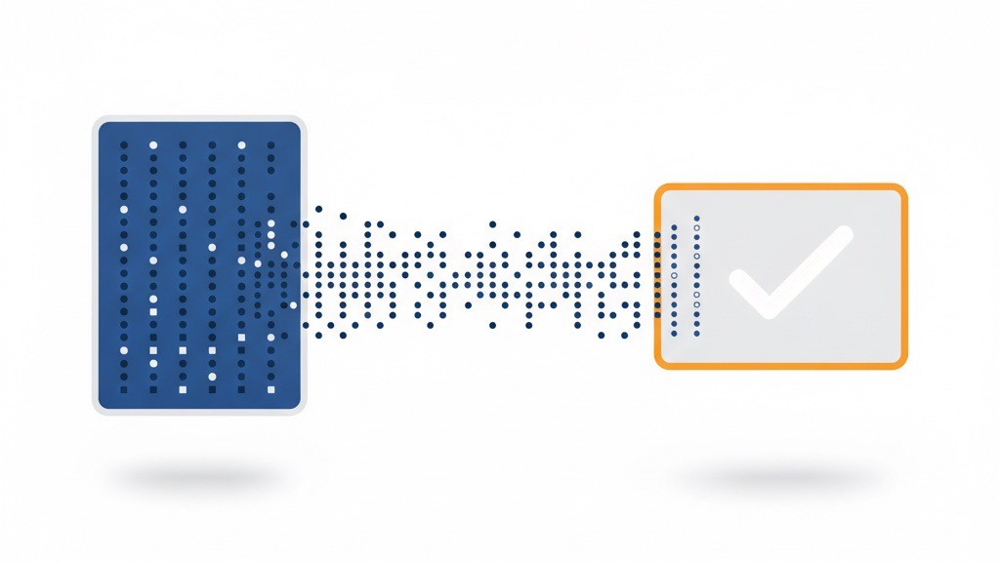

「できます」の説明をやめたら、サイトが信頼のハブになった ——メニュー表から「工程を見せる」設計へ
業務改善コラム ／ 集客・見える化 ／ 読了目安：約8分
「何をしている会社なのかわかりにくかった」。問い合わせをくれた方に、そう言われたことがあります。うちのトップページにはサービスメニューが4本並んでいて、それぞれに実績や対応範囲を箇条書きで添えて、自分では整ったページのつもりでした。笑
しばらく考えて、やっと腑に落ちたのが「できます」は自己申告にすぎないということでした。読んだ人が「で、この人は今どんな仕事をしてるん？」と思った瞬間、何も伝わってへんのと同じです。この記事は、そこから自社サイトを全面的に書き直した話です。
「できます」を並べ続けていた頃
以前のうちのトップページには、サービスメニューが4本並んでいました。「Webサイト制作」「業務自動化」「EC運営支援」「データ分析」——それぞれにできることを箇条書きで補足して、見た目はそれなりに整っていました。
ところが、実際に問い合わせをくれた方に話を聞くと「何をしている会社なのかわかりにくかった」という声が何度も出てくる。「できること」を増やすほど、逆に輪郭がぼやけていく。なんでやろ、としばらく考えても、うまく言葉にできませんでした。
ある日ようやく腑に落ちたのが、「できます」と書くことと「やっています」と書くことは、読む人への伝わり方が全然違う、ということです。「できます」は能力の宣言で、裏付けがなくても誰でも書ける。でも「今週こういう仕事をしました」という事実は、その人にしか書けません。読んだ人は前者を流し読みして、後者で止まります。
メニュー表を撤去して「工程」1本に絞った
最初にやったのは、サービスメニューの羅列を全部消すことでした。代わりに置いたのは「自分が実際にどんな工程で日々の仕事をしているか」という1本の流れです。EC商品の企画から、コンテンツ生成、在庫管理の自動化、発送作業、売上分析まで——それが1日・1週間の中でどうつながっているかを、そのまま書きました。
同時に、サイトの配色も変えました。緑が主役の配色から白ベースに切り替えて、見た目の「主張の強さ」を下げる。派手さを減らすほど、中身が前に出てきます。

ブログを主役に据えた理由
「やっています」を示すのに、記事の蓄積がいちばん効きました。「できます」は1行で書けますが、「こういう課題に対してこう考えてこう動いた」という記録は、実際にやった人間にしか書けないからです。
トップページの構成もあわせて変えました。サービス説明のブロックを小さくして、実績記事の一覧グリッドをファーストビューの近くに置く。来た人が最初に目にするのはメニュー表じゃなくて、自分が積み上げてきた仕事の記録になります。
記事が増えるほど「この人はずっとやってるんやな」という印象が残ります。それはどんなうまい売り文句よりも、信頼の証拠として効く。サービスページは「信頼したあとに確認するページ」であって、信頼を生むページではない——そう割り切ったら、何を先に置くかがはっきりしました。
週次自動公開で「書き続ける」を担保する
ブログを主役にすると決めても、書き続けるのは簡単やないです。日々の仕事が立て込むと、更新は普通に後回しになります。「更新が止まったサイト」は「活動が止まった事業者」に見えてしまうので、空白を作らんようにしたかった。
そこで入れたのが、週次の自動公開の仕組みです。記事を何本か先に用意しておいて、毎週決まったタイミングで自動的に公開されるようにする。自分が別の作業に潜っている日も、サイトは更新され続けます。
「見せ続ける」が信頼になる仕組み
正直、書き直してすぐ問い合わせが増えるわけではありません。ただ、数か月経つうちに、問い合わせの中身が少しずつ変わってきた実感があります。「このサービスはいくらですか」の一言で来るものより、「こういう状況なんですが、どんなことが考えられますか」という問いが増えた印象です。
これは、相手がサイトを何ページも読んだうえで来てくれているサインやと思ってます。メニュー表だけ見て問い合わせてくる人と、記事を何本か読んで来てくれる人とでは、話の入り方が全然違う。後者は「この人に頼むかどうか」をある程度決めた状態なので、最初から会話が濃いです。
売り文句を磨くより、やり続けていることを見せ続けるほうが、長い目で見て手間も少ないし、信頼も厚くなる。今はそう思ってます。
他の事業者が応用するときのポイント
同じ考え方は、規模や業種に関係なくやれると思います。技術的に特殊なことは何もしてません。私が最初にやったのはこの3つです。
- 今週自分がやったことを1つ記事にする：EC出品作業でも、顧客対応でも、書類整理でもいいです。「やった事実＋なぜそうしたか」の2点だけで記事になります
- メニュー表を1本減らす：全部消さなくていいです。いちばん漠然としているメニューを1本削るだけで、残りが急に具体的に見えてきます
- 公開日を先に決める：「書いたら公開」ではなく「この日に公開する」と決めてから記事を用意します。締め切りが先にあるほうが書きやすいし、自動化とも相性がいい
自社サイトの「できます」を「やっています」に変えてみませんか
「うちのサイト、何屋か分からんと言われる」。同じことで困っている人がいたら、どこを消してどこを見せるかを一緒に洗い出すところから話しましょう。LINEで現状をひと言送ってもらうだけで大丈夫です。
LINEで相談する